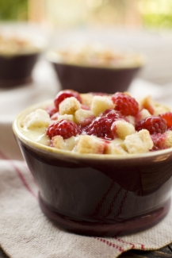

Raspberry Cream Brown Betty

Description:
This particular recipe is one way of making a dish that can be made many different ways. We will be using challah or brioche, which is best accompanied by ommitting the 2 tbsp sugar when preparing the bread cubes.
The pastry cream for this dish requires advance preparation; this recipe's pastry cream is thinner than the classic version of the dish, but will thicken into a custard during the baking process!
Ingredients:
- 1 tbsp unsalted butter, at room temperature
- 3 cups small (1/4") bread cubes
- 1/4 cup (2 ounces) unsalted butter, melted
- 2 tbsp granulated sugar (only if not using challah or brioche)
- Seeds scraped from 1/2 vanilla bean
- 2 cups half-and-half
- 2/3 cup (4.5 ounces) granulated sugar
- 1/2 tsp fine sea salt
- 6 egg yolks
- 1 tbsp cornstarch
- 1/2 dry pint (1 cup) raspberries
Steps:
- Preheat oven to 350 degrees F. Butter six 5-ounce ramekins. Spread the bread cubes in a single layer on the baking sheet and bake for 15 minutes. Once the bread is cool, toss it with the melted butter and sugar. Set aside.
- To make the pastry cream, put the vanilla bean seeds into a saucepan. Add the half-and-half and vanilla pod and cook over Medium-Low heat until hot but not boiling.
- Separately, whisk the sugar and salt into the egg yolks and continue whisking until slightly thickened and lighter in color. Add the cornstarch and whisk until combined.
- Slowly pour half of the hot liquid into the yolk mixture, stirring constantly until well blended.
- Pour the yolk mixture into the saucepan and cook over Medium heat, whisking constantly, until the mixture begins to thicken and bubble. Strain the mixture through a fine-mesh sieve and stir frequently until cool.
- Distribute half the bread cubes among the prepared ramekins. Pour the pastry cream over the bread cubes, then put the berries atop the pastry cream. Top with the remaining bread cubes.
- Bake for 15 minutes, or until the tops have browned and the berries bleed slightly. Cool to room temperature.